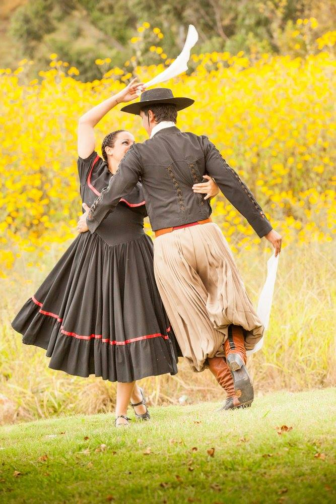
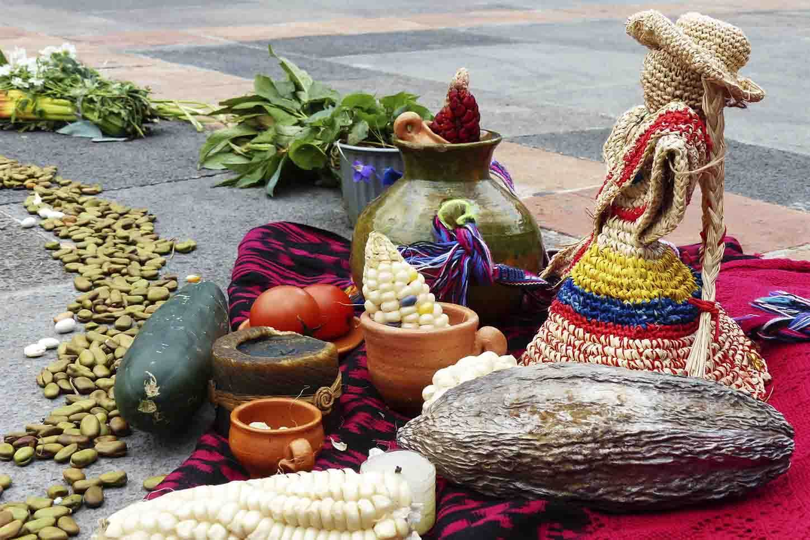
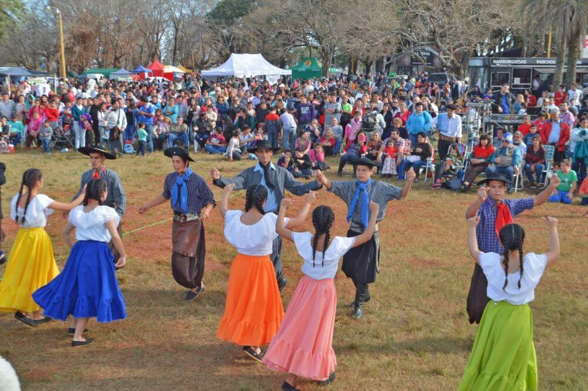
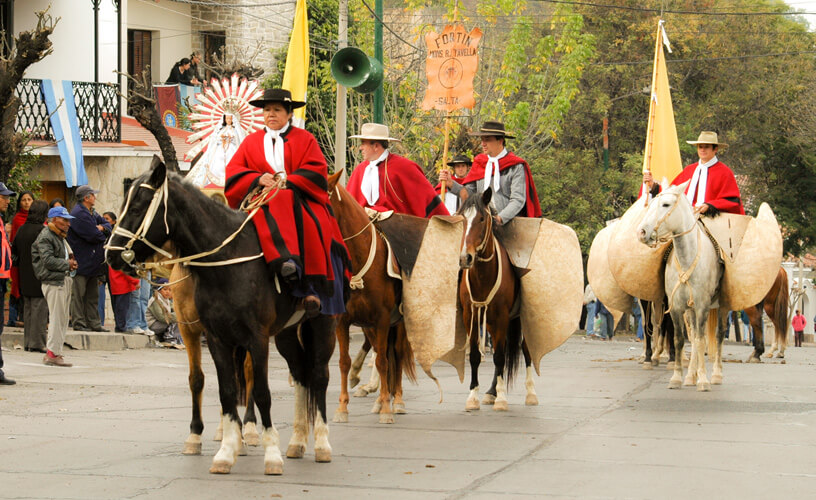

Folklore Salteño
El folklore trata de tradiciones, de hechos sociales, estéticos, compartidos por la población y que suelen transmitirse de generación en generación.Al son de las guitarras y los bombos se escuchan zambas, chacareras, y los divertidos carnavalitos andinos. Hay festivales de música todo el año

Fiesta de la Pachamama
El día de la Pachamama se celebra el 1 de agosto para honrar y venerar a la Madre Tierra. Se trata de una serie de rituales y ceremonias que se realizan dentro de la cultura aimara y quechua del norte de Argentina. También se conmemora en Bolivia y parte de Chile, así como en Perú, Ecuador y Colombia

Carpas
En Salta, sus manifestaciones principales son las comparsas y las carpas. Las comparsas están formadas por grupos de vecinos que componen cantos y danzas vistiendo ricos trajes que los identifican, inspirados en diseños indígenas.

Desfile Gaucho
Las actividades de Salta serán el cierre a un homenaje de 10 días y 10 fogones en 10 ciudades del país. Un gran fogón en la medianoche del viernes 17 de junio, guardia nocturna de los gauchos y desfile a caballo
Empanada Salteña
Esta empanada se destaca por tener papa en su relleno, lo que la hace única y diferente
Ingredientes
- 1 kilo de carne
- 400 g de papas cortadas en cubo
- 700 g de cebolla
- 250 g de cebolla de verdeo
- 6 huevos
- Sal, orégano, pimentón, ají molido y comino.
Preparacion
- Paso 1
- Cortar las cebollas y los pimientos sin pepitas ni nervaduras en cubos del mismo tamaño.
- Paso 2
- Cortar la carne en pequeños cubos y hacer lo mismo con las papas, blanquear unos minutos en agua hirviendo no deben quedar cocidas por completo.
- Paso 3
- Colocar la grasa en una olla y dorar los pimientos y la cebolla hasta que transparente. Salar.
- Paso 4
- Incorporar la carne y luego las papas.
- Paso 5
- Retirar del fuego minutos antes de terminar la cocción, condimentar y dejar enfriar.
- Paso 6
- Agregar la cebolla de verdeo picada y los huevos duros picados justo antes de armar las empanadas.
- Paso 7
- Estirar los discos de masa hasta obtener 13 cm de diámetro.
- Paso 8
- Cocinar en horno a 200º C durante unos 15 minutos o freír en abundante grasa de pella.
- Paso 9
- Se las suele acompañar con una salsa hecha con tomate triturado, ají picante, sal y limón.
El Charquisillo
plato del Chaco salteño, se compone de charqui, lonjas de carne deshidratada
Ingredientes
- 1/2 kg. de charqui
- 150 g. arroz
- Grasa pella
- Comino
- Ají
Preparacion
- Paso 1
- Comenzamos la receta cocinando el charqui 15 min
- Paso 2
- deje enfriar y muélalo o con las manos haga flecos
- Paso 3
- remoje el arroz en agua caliente, cuele y deje secar.
- Paso 4
- Ponga grasa pella en una cacerola y deje calentar
- Paso 5
- Agregue el charqui y cocine unos minutos.
- Paso 6
- Coloque el arroz remueva dorándolo añada a gusto la sal, el comino y el pimentón
- Paso 7
- Agregue ají; ponga agua hirviendo y mueva la preparación
- Paso 8
- luego tape la cacerola y deje cocinar 15 minutos aproximadamente
Humita en olla
Las humitas son parecidas a los tamales en el sentido de que están hechas principalmente a base de maíz
Ingredientes
- 12 choclos
- 3 cucharadas de manteca
- 3 cucharadas de cebollas picadas finas
- 4 hojas de albahaca
- 400 g de queso mozzarella
- 800 g de zapallo
- Sal, pimienta y nuez moscada, a gusto
Preparacion
- paso 1
- Retirar las barbas y las chalas de los choclos. Lavarlos bien.
- paso 2
- Rallar 8 choclos. Desgranar con la ayuda de un cuchillo los 4 choclos restantes.
- paso 3
- Pelar el zapallo y hervirlo. Colarlo y pisarlo para lograr un puré.
- paso 4
- Calentar una olla con la manteca con el aceite. Rehogar la cebolla y el morrón. Agregar los choclos rallados y desgranados, con todo su jugo.
- paso 5
- Sumar el azúcar. Salpimentar y condimentar con la nuez moscada. Cocinar 10 minutos.
- paso 6
- Agregar el zapallo, la mozzarella y albahaca
- paso 7
- Retirar del fuego y cejar reposar 10 minutos con la olla tapada.
- paso 8
- Servir espolvoreando con pimentón. Si se desea, se puede sumar cebolla de verdeo picada, ramitas de hierbas aromáticas
Locro
El locro es una especie de guiso de origen prehispánico y preincaico, típico de varios pueblos andinos
Ingredientes
- 300 gr de maíz blanco partido
- 200 gr de poroto pallares blanco
- 200 gr de panceta
- 150 gr de chorizo criollo
- 1/2 chorizo colorado
- 200 gr de pechito de cerdo
- 500 gr de calabaza
Preparacion
- Paso 1
- Remojar los porotos pallares y el maíz blanco 24 horas antes de preparar el guiso guardar en recipiente con agua en heladera
- Paso 2
- Cortar en cubos todos los ingredientes.
- Paso 3
- Cocinar en una cacerola el maíz junto con los porotos, la calabaza y la cebolla con 2 litros de agua.
- Paso 4
- Revolver con cuchara de madera cada 15 minutos.
- Paso 5
- Revolver con cuchara de madera cada 15 minutos.
- Paso 6
- Picar la cebolla de verdeo y verterla en una ollita con el aceite a baja temperatura. La idea es que se cocine lento y no quede crujiente.
- Paso 7
- Añadir 2 cucharadas de pimentón y 2 cucharadas de ají molido a medio vaso de agua y sumarlo al aceite. Mezclar. Cocinar 5 minutos más y retirar.
- Paso 8
- Servir el locro bien caliente en cazuela de barro y la salsa picante en recipiente aparte para incorporar a gusto.